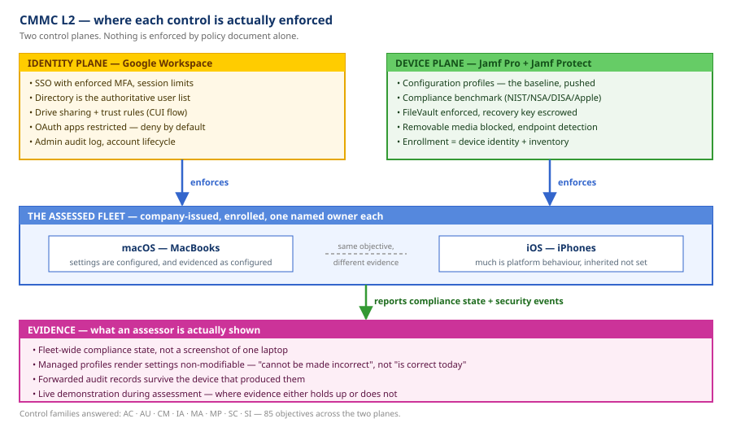
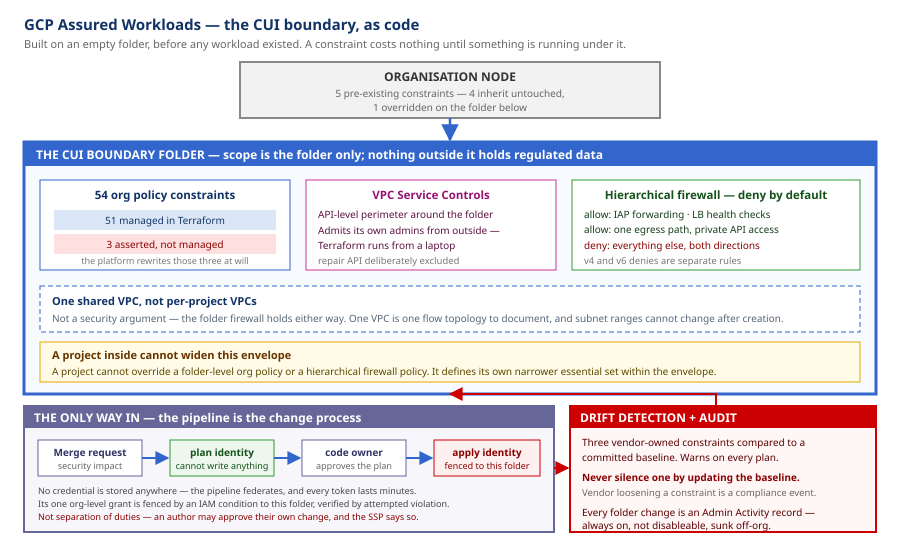
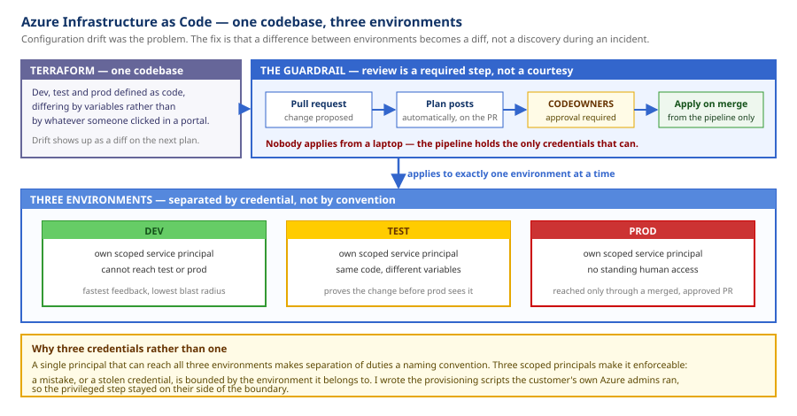

► About Me
Hi, I'm Ryan Ruddock — an IT Engineer specializing in endpoint management, identity and access management, and operational documentation. I've owned endpoint fleets, IaC repos for entire development cycles, and internal documentation efforts.
When I get handed a tough problem, I plan, implement, and solve. When I see a process that happens often and takes too long, I automate it. I strive to make the company feel like IT helps them, not that IT is the thing impeding them.
★ Currently: IT Specialist at Rise8.
★ Currently building: Chip8 Emulator in Python, then C++, then a Gameboy Emulator. NEW!
► Work History
| Where | Scope |
|---|---|
|
Rise8 IT Specialist Feb 2026 – Present · Remote, USA |
macOS fleet ownership end to end — MDM architecture, CMMC Level 2 endpoint and Workspace controls, internal tooling, and the IT documentation practice. |
|
ATA, LLC Professional Operations Engineer Mar 2025 – Feb 2026 · Remote, USA |
Cloud infrastructure as code and Windows endpoint provisioning — Azure environments in Terraform, CI/CD guardrails, and zero-touch enrollment. |
|
Defense Unicorns IT Operations Engineer Nov 2024 – Mar 2025 · Remote, USA |
macOS endpoint security and software distribution — centralized app delivery and device-level MFA, with the documentation to roll both out. |
|
United States Air Force Military Service 2019 – 2025 · Various Locations |
Six years of service. Where "make a plan, write the guide, then execute" came from — it still runs everything above. |
► Projects — What I Built & What I Built It With
Project Nexus — App Vetting Pipeline Rise8 · 2026 · designed and built solo
IT had no way to vet or track the unapproved apps showing up across the fleet. Nexus is an internal platform that pulls flagged apps out of Jamf, researches them automatically, and runs them through an approve/restrict decision that pushes back down to the devices.
Outcome: ad-hoc app requests became a monitored pipeline.
▸ screenshots of the demo. Click either to open it right here on the page — or open it full screen.
▸ STACK & HOW IT WAS USED- Jamf Suite → inventory
- An extension attribute reports non-baseline apps per device, turning "what is installed out there?" into a queryable inventory instead of a guess.
- App Store API, NIST CVE, AI-assisted research → safety review
- Each flagged app gets researched across publisher reputation and known CVEs, so a decision is evidence-backed rather than a gut call.
- Jamf Suite → enforcement
- Approved apps get published to the internal app store; restricted apps get removed from the device. The decision and the enforcement are the same action.
- Wiki.js → the list people actually read
- The approved software list lives on the company wiki. Nexus seeds from that page and writes back to it, so the human-readable list and the list being enforced on devices never drift apart.
CMMC Level 2 — Endpoint & Workspace Controls Rise8 · 2026 · owned the control set through C3PAO assessment
A CMMC Level 2 assessment is a third party checking your NIST SP 800-171 implementation, one control objective at a time. I owned the controls a managed Apple fleet and Google Workspace answer for — 85 objectives across eight families — implementing the configuration, producing the evidence, and demonstrating the running system to the assessor.
Outcome: passed with 0 PO&AMs — nothing deferred to a remediation plan.
The architecture is two control planes. Identity enforces who and from where; device management enforces what the endpoint is allowed to be. A screenshot proves a setting was true once on one machine — an assessor wants to know it is enforced fleet-wide and what happens when a device drifts, which is an answer only the management plane can give.

▸ ARCHITECTURE — CLICK TO ENLARGEGCP Assured Workloads — CUI Boundary as Code Rise8 · 2026 · designed and written solo
A CMMC Level 2 / FedRAMP Moderate data boundary in Google Cloud, written as Terraform. Scope is one folder: everything regulated lives there and nothing outside it does. The folder carries 54 org policy constraints, a service-controls perimeter and a deny-by-default firewall, and a project inside it cannot widen that envelope.
Outcome: the boundary exists as code — reviewable, reproducible, and enforcing before anything regulated landed in it.
Two choices shaped it. It was built on an empty folder — a constraint costs nothing until something runs under it, and the same constraint over a live workload needs an impact assessment and a change window. And the pipeline is the change process: the identity that reviews cannot write, the identity that applies is fenced to this folder by an IAM condition, and no credential is stored anywhere.

▸ ARCHITECTURE — CLICK TO ENLARGEAzure Infrastructure as Code — Dev / Test / Prod ATA, LLC · 2025–2026
Configuration drift across cloud environments was an unmanaged risk. Built dev, test and prod in Terraform from one codebase, with a pipeline that makes review a required step rather than a courtesy — a plan posts on every pull request, code-owner approval is required, and apply happens on merge.
Outcome: environments became reproducible, and a difference between them became a diff instead of something discovered during an incident.
Each environment gets its own scoped service principal, so separation of duties is enforced by credential rather than by naming convention — a mistake or a stolen token is bounded by the environment it belongs to. I wrote the provisioning scripts the customer's own Azure admins ran, so the privileged step stayed on their side of the boundary.

▸ ARCHITECTURE — CLICK TO ENLARGEUnicorn App Manager — Centralized Software Portal Defense Unicorns · 2024–2025 · built it and named it
Uncentralized software management was a risk to both version control and security compliance across the fleet. Built a centralized portal that standardized every application install — then did the branding and coined the name.
Outcome: one known-good install path for the whole fleet.
▸ STACK & HOW IT WAS USED- Installomator + Mac App Catalog → standardized installs
- Applications install and update from a known-good source, which is what actually closes the version control and compliance gap.
- Self Service+ → the front door
- Users get a branded portal they will actually use, so the compliant path is also the easy path.
★ Certifications & Education
- 🏆 Jamf Certified Associate — Jamf Protect · May 2026 NEW!
- 🏆 Jamf Certified Associate — Jamf Pro · April 2026 NEW!
- 🎓 B.S. Cybersecurity Technology · University of Maryland Global Campus · Fall 2025
- 🏆 Red Hat Certified System Administrator (RHCSA) · May 2024
- 🏆 CompTIA Security+ · January 2024
- 🎓 A.A.S. · Community College of the Air Force · Spring 2023
✎ Sign My Guestbook
Loading the guestbook…